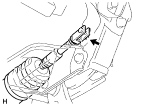
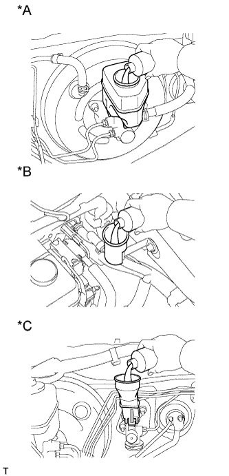

ПЕДАЛЬ ТОРМОЗА (для моделей с гидравлическим усилителем тормозной системы) > УСТАНОВКА |
| 1. УСТАНОВИТЕ КРОНШТЕЙН ПЕДАЛИ ТОРМОЗА В СБОРЕ |
Временно вверните установочный болт усиления.
Для моделей с левосторонним рулевым управлением:
Установите гидравлический усилитель тормозной системы (Нажмите здесь).
Для моделей с правосторонним рулевым управлением:
Установите гидравлический усилитель тормозной системы (Нажмите здесь).
Установите кронштейн педали тормоза в сборе и закрепите его 4 гайками.
Вверните установочный болт усиления кронштейна педали тормоза.
| 2. УСТАНОВИТЕ ШТИФТ ШТОКА |
 |
Нанесите тонким слоем гликолевую консистентную смазку на основе литиевого мыла на внутреннюю поверхность отверстия рычага педали тормоза.
| *1 | Гликолевая консистентная смазка на основе литиевого мыла |
|  |
Установите на место вилку штока главного цилиндра, вставьте штифт штока с левой стороны автомобиля, а затем установите новый фиксатор.
| 3. УСТАНОВИТЕ СТЯЖНУЮ ПРУЖИНУ ПЕДАЛИ ТОРМОЗА |
Нанесите тонким слоем гликолевую консистентную смазку на основе литиевого мыла на внутреннюю поверхность отверстия в кронштейне педали тормоза в сборе.
Установите стяжную пружину педали тормоза на кронштейн педали тормоза в сборе.
| 4. УСТАНОВИТЕ ВЫКЛЮЧАТЕЛЬ СТОП-СИГНАЛОВ В СБОРЕ |
Установите выключатель стоп-сигналов (Нажмите здесь).
Подсоедините разъем выключателя стоп-сигналов.
| 5. УСТАНОВИТЕ ПОДУШКУ БЕЗОПАСНОСТИ № 1 ДЛЯ ЗАЩИТЫ НОГ В СБОРЕ |
Установите подушку безопасности № 1 для защиты ног в сборе (Нажмите здесь).
| 6. ПОДСОЕДИНИТЕ ПРОВОД К ОТРИЦАТЕЛЬНОМУ ВЫВОДУ АККУМУЛЯТОРНОЙ БАТАРЕИ |
| 7. ПРОКАЧАЙТЕ ТОРМОЗНУЮ СИСТЕМУ |
Установите замок зажигания в положение ON (ВКЛ).
Снимите крышку наливного отверстия бачка главного цилиндра тормозной системы в сборе.
Добавляйте тормозную жидкость до тех пор, пока ее уровень не окажется между отметками MIN и MAX бачка.
Многократно нажимая на педаль тормоза, удалите воздух из прокачного штуцера колесного тормозного цилиндра правого переднего дискового тормоза.
Повторяйте рассмотренную выше операцию до тех пор, пока воздух не будет удален полностью, а затем затяните прокачной штуцер, удерживая нажатой педаль тормоза.
Удалите воздух из прокачного штуцера колесного тормозного цилиндра левого переднего дискового тормоза таким же образом, как с правой стороны.
Удерживая нажатой педаль тормоза, ослабьте прокачной штуцер колесного тормозного цилиндра правого заднего дискового тормоза и, не отпуская педаль тормоза, дайте тормозной жидкости вытекать из прокачного штуцера, пока работает электродвигатель насоса.
Когда в тормозной жидкости не будет воздуха, затяните прокачной штуцер, а затем отпустите педаль тормоза.
Удалите воздух из прокачного штуцера колесного тормозного цилиндра левого заднего дискового тормоза таким же образом, как с правой стороны.
Выключите зажигание и подсоедините портативный диагностический прибор к разъему DLC3.
Установите замок зажигания в положение ON (ВКЛ).
Включите портативный диагностический прибор.
Войдите в следующие меню: Chassis / ABS/VSC/TRC / Utility / Air Bleeding.
Несколько раз нажмите на педаль тормоза а затем, удерживая ее нажатой, включите FR Line и удалите воздух.
Включите FL Line и удалите воздух таким же образом, как для FR.
Включите RR Line, ослабьте прокачной штуцер колесного тормозного цилиндра правого заднего дискового тормоза и слейте тормозную жидкость.
Повторяйте рассмотренную выше операцию до тех пор, пока воздух не будет удален полностью, а затем затяните прокачной штуцер.
Включите RL Line и удалите воздух из прокачного штуцера колесного тормозного цилиндра левого заднего дискового тормоза таким же образом, как с правой стороны.
Выключите портативный диагностический прибор и зажигание.
Проверьте, нет ли утечек тормозной жидкости.
Проверьте и отрегулируйте уровень тормозной жидкости (Нажмите здесь).
Удалите коды DTC (Нажмите здесь).
| 8. ЗАЛЕЙТЕ ТОРМОЗНУЮ ЖИДКОСТЬ В БАЧОК |
|  |
Залейте тормозную жидкость в бачок.
| *A | Для моделей с левосторонним рулевым управлением (для моделей с 2TR-FE, 5L-E) |
| *B | Для моделей с левосторонним рулевым управлением (с 1GR-FE, 1KD-FTV) |
| *C | Для моделей с правосторонним рулевым управлением |
| 9. ВЫПУСТИТЕ ВОЗДУХ ИЗ ТРУБОПРОВОДА ПРИВОДА СЦЕПЛЕНИЯ |
Снимите колпачок прокачного штуцера рабочего цилиндра сцепления.
Подсоедините виниловую трубку к прокачному штуцеру (штуцеру для удаления воздуха).
Несколько раз нажмите педаль сцепления, а затем ослабьте прокачной штуцер при нажатой педали.
Когда жидкость прекратит вытекать, заверните прокачной штуцер и отпустите педаль сцепления.
Повторяйте 2 описанных выше операции до тех пор, пока из жидкости не будет удален весь воздух.
Затяните прокачной штуцер.
Установите колпачок прокачного штуцера.
Проверьте, чтобы из трубопровода системы сцепления был удален весь воздух.
| 10. ПРОВЕРЬТЕ УРОВЕНЬ ЖИДКОСТИ В БАЧКЕ |
Проверьте уровень жидкости.
Если уровень тормозной жидкости мал, проверьте наличие утечек и тормозные колодки дискового тормоза. При необходимости долейте тормозную жидкость в бачок после замены или ремонта.
| 11. ПРОВЕРЬТЕ, НЕТ ЛИ УТЕЧЕК ТОРМОЗНОЙ ЖИДКОСТИ ИЗ ТРУБОПРОВОДА ПРИВОДА СЦЕПЛЕНИЯ |
| 12. ПРОВЕРЬТЕ И ОТРЕГУЛИРУЙТЕ ПЕДАЛЬ ТОРМОЗА |
Проверьте и отрегулируйте педаль тормоза (Нажмите здесь).